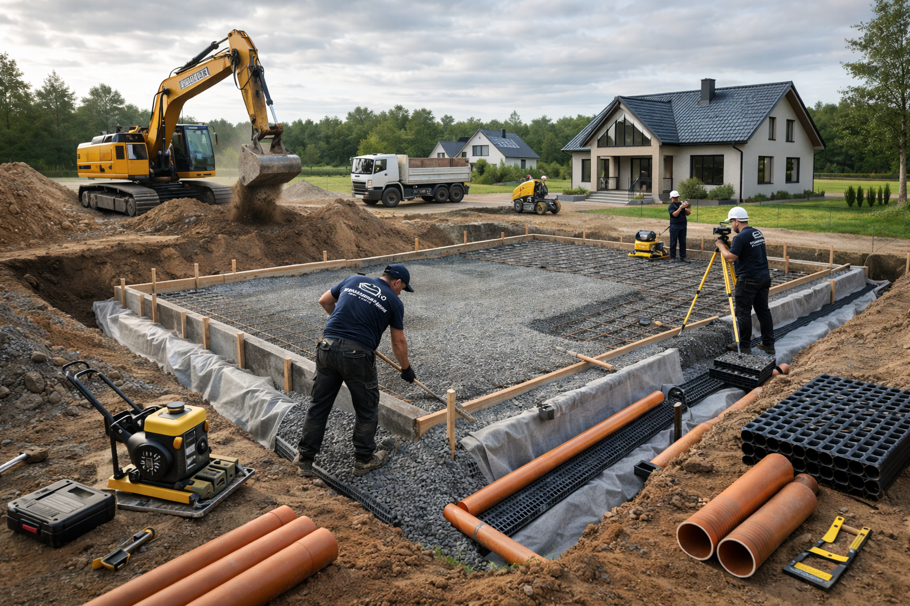

Vundamenditööd ja vundamendi parandused
Väiksemad vundamenditööd, parandused, hüdroisolatsioon ja ettevalmistus.

Vundament mõjutab hoone stabiilsust, niiskusrežiimi ja edasiste ehitustööde kvaliteeti. Renoveeri Kodu teeb väiksemaid vundamenditöid, parandusi, hüdroisolatsiooni ettevalmistust ja seotud betoonitöid Tallinnas ning Harjumaal.
Erinevalt üldisest betoonitööde lehest keskendub see leht vundamendi sõlmedele, niiskuskaitsele, soklile ja hoone aluse korrastamisele. Enne tööde alustamist hindame pragusid, vajumisi, pinnast ja vee liikumist.
Mida teenus sisaldab?
- vundamendi väiksemad parandused ja ettevalmistus
- sokli ja niiskuskaitsega seotud tööd
- kaevetööde ja aluspinna korrastuse planeerimine
- vundamendiga seotud betooni- ja viimistlustööd
Millal seda tellida?
Vundamenditöid tellitakse siis, kui sokkel laguneb, niiskus liigub konstruktsiooni, rajatakse väiksem abihoone või olemasolev alus vajab korrastamist. See leht ei konkureeri betoonitöödega, vaid täpsustab vundamendile omase probleemi.
Tööprotsess
Seisukorra hindamine
Vaatame üle praod, niiskusjäljed, sokli seisukorra ja vee äravoolu. Vajadusel soovitame täiendavat eksperthinnangut.
Ettevalmistus
Puhastame ja avame vajalikud pinnad, planeerime hüdroisolatsiooni või paranduse tööjärjekorra.
Parandus ja kaitse
Teeme kokkulepitud parandused ning jälgime, et edasine viimistlus või täide ei rikuks niiskuskaitset.
Vundamendi töömahu hindamine
Vundamenditööde puhul ei piisa ainult mõõtudest. Oluline on hinnata pinnast, niiskusjälgi, pragusid, sokli seisukorda ja vee liikumist hoone ümber. Väiksem parandus võib olla lihtne, kuid vajumine või konstruktsiooni muutmine võib vajada projekti või eraldi eksperthinnangut.
Töö kvaliteeti mõjutab eriti ettevalmistus ja niiskuskaitse. Kui vundamendi või sokli töö on seotud fassaaditöödega, tuleb jälgida, et üks lahendus ei takistaks teist ning vihmavesi juhitaks hoonest eemale.
Kohalik kogemus ja tööde täpsustamine
Vundamendi juures tuleb vaadata tervikut: sokkel, sadevesi, pinnase kalle ja niiskuskaitse peavad koos töötama. Päringu hindamisel vaatame alati, milline on objekti ligipääs, kas töö toimub elatud ruumis, millised pinnad vajavad kaitsmist ja milline on mõistlik tööjärjekord. See aitab vältida olukorda, kus üks etapp tuleb hiljem uuesti avada või parandada.
Renoveeri Kodu eesmärk on anda selge ja realistlik hinnang enne töö alustamist. Kui fotodest ei piisa, lepime kokku objekti ülevaatuse. Nii saab täpsustada materjalid, ajakulu, seotud teenused ja võimalikud riskikohad enne, kui töö päriselt käima läheb.
Vundamendi töödel vaatame võimalusel ka vihmavee liikumist, drenaaži vajadust ja sokli viimistlust. Kui vee äravool jääb lahendamata, võib sama niiskusprobleem pärast parandust tagasi tulla ning kahjustada uut viimistlust.
Korduma kippuvad küsimused
Kas parandate vana vundamenti?
Jah, väiksemate paranduste ja sokliga seotud tööde puhul saame aidata pärast seisukorra hindamist.
Kas vundamenditöö vajab projekti?
Mõned tööd võivad vajada projekti või ekspertiisi. Konstruktsiooni muutmisel lähtume vajalikest nõuetest.
Kas teete hüdroisolatsiooni?
Saame teha vundamendi ja sokliga seotud niiskuskaitse ettevalmistust ning kokkulepitud mahus hüdroisolatsiooni.
Kuidas erineb see betoonitöödest?
Betoonitööde leht keskendub valule ja aluspindadele, vundamenditööde leht hoone aluse, sokli ja niiskuskaitse probleemidele.